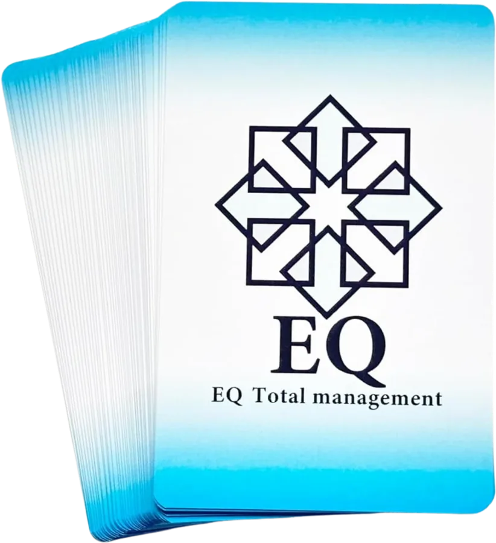
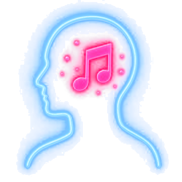
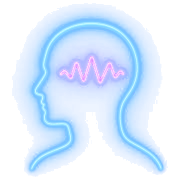
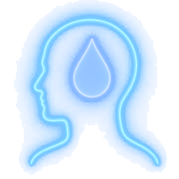

EQコアカード®
106の価値観の言葉を通して、自分自身や相手への理解を深めていく株式会社Brifu独自のEQツールです。
EQ Skills — 株式会社Brifu
感情を知る。心の動きを知る。
自分と関わる力、他者と関わる力を
身につける。
EQ Skillsは、株式会社BrifuのEQ教育体系における
「横成長」の領域です。
感情を手がかりに
心の動きの特徴を知り、
自分と関わる力・他者と関わる力を
スキルとして身につける。
知識を増やすだけでなく、実際に使える力へ。
For You — こんな方へ
EQを初めて学ぶ方から、仕事や人材育成に活かしたい方まで、段階に合わせて学べます。
Emotion — 感情から始まる

楽しい
不安
悲しみ感情には、それぞれ特徴があります。
特徴を知ると、自分の心の動きが少しずつ見えてきます。
感情を良い・悪いで判断せず、なくそうともしない。
感情の特徴を知ることから、EQを学びます。
Why — なぜ必要なのか
「分かっているのに、できない。」
人との関係で感情が動いた時。判断に迷った時。考えが合わない時。
知識があるだけでは、行動につながらないことがあります。
だからこそ必要なのが、実際の場面で使えるスキルです。
EQ Skillsは、EQを知識から実践へ変える力を身につける領域です。
Skills — 身につけていく力
01
どんな感情があり、それぞれにどんな特徴があるのか。感情が動いた時、心や身体にどんな変化が起こるのか。
まずは、感情について学ぶことから始めます。
02
同じ出来事でも、感じ方や反応は人によって違います。どんな時に、どの感情が動き、どう反応しやすいのか。
感情を手がかりに、自分の心の動きを知っていきます。
03
何を感じ、何を考え、何を思っているのか。
EQコアカード®やさまざまなワークを活用し、自分の状態を知り、自分と関わる方法を身につけます。
04
今、何を感じ、何を考えているのか。
感情と思考を整理して自分の状態を把握し、次の行動を考えやすくします。
05
感情をなくしたり、抑え込んだりはしません。
必要に応じて、その場で一時的に感情を調整する方法を身につけます。
06
感じ方、考え方、価値観、行動の仕方は人によって異なります。
その違いを理解したうえで、相手に合った伝え方や関わり方を選べるようにします。
07
学んだ知識やスキルを、実際の人との関わりの中で使います。
相手との良好な関係を築く方法を身につけます。
08
EQは、知識を得るだけでは高まりません。行動し、繰り返し実践することで使えるスキルが増え、EQの能力が高まっていくと株式会社Brifuは考えています。
知識を「できる力」へ変え、成果につなげていきます。
Features — EQ Skillsの特徴
EQの知識だけでなく、感情そのものの種類や特徴を学びます。それが、心の動きを知る基礎になります。
どんな時に感情が動き、何を思い、どう反応するのか。それが、自分と関わる力の土台になります。
自分と、そして他者とどう関わるのか。その方法を知識ではなく、スキルとして身につけます。
その積み重ねで、使えるスキルが増え、EQの能力が高まっていきます。
会話、仕事、家族との関係、チーム活動、人材育成。日常のさまざまな場面で活用できます。
Programs — 主な学び

106の価値観の言葉を通して、自分自身や相手への理解を深めていく株式会社Brifu独自のEQツールです。
思考や感情を整理し、自分自身で次の行動へ進むためのEQスキルを身につけます。
EQコアカード®で自分と相手への理解を深め、対話やコミュニケーションに活かす実践的な学びです。
EQコアカード®を活用し、EQを人へ届けるための認定資格です。
自分で実践するだけでなく、人へ伝え、実践を支え、人を育成するところまでを目指す育成領域です。
※各講座・資格の最新開催情報・参加条件等についてはお問い合わせください。
Growth — 横成長と縦成長
株式会社Brifuは、感情の学びにも「横成長」と「縦成長」の違いがあると考えています。
EQ Skills — 横成長
感情を手がかりに心の動きの特徴を知り、自分と関わる力・他者と関わる力をスキルとして身につける。実践を重ね、
「できること」を増やしていく成長です。
EIA — 縦成長
感情が動いた出来事を入口に、自分の認識に気づく。認識・判断・あり方を客観的に見て、出来事を自分自身の成長へ変えていく。
認識・あり方・人間性そのものを育てていく成長です。
Vision — 私たちが目指すもの
そして、その人が持っている可能性を、
人生・仕事・組織の中で活かしていく。
私たちが目指すのは、
お互いを大切にする社会。
Start — はじめの一歩
感情を知ることから、
EQを始めてみませんか。